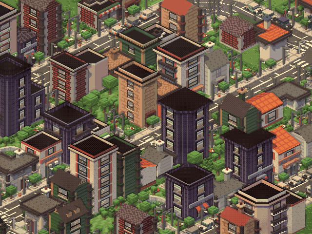
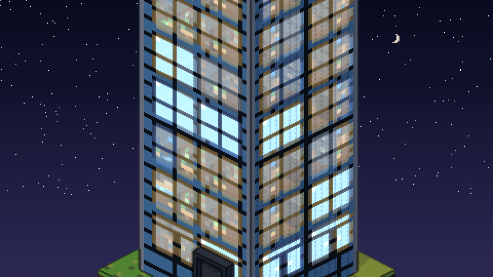
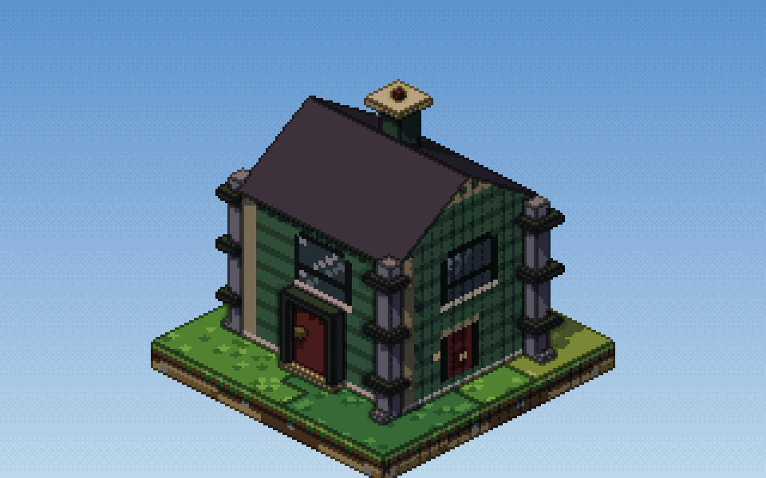
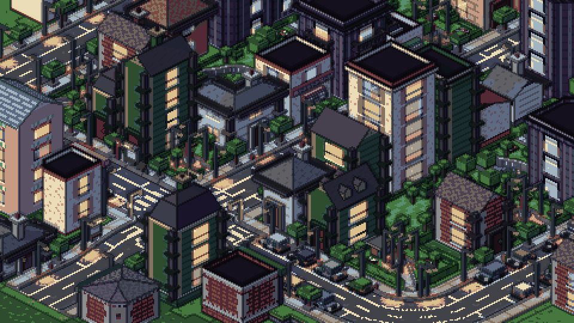
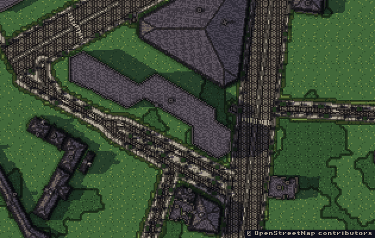
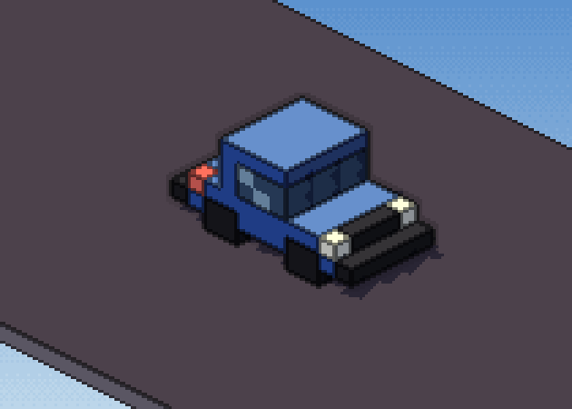
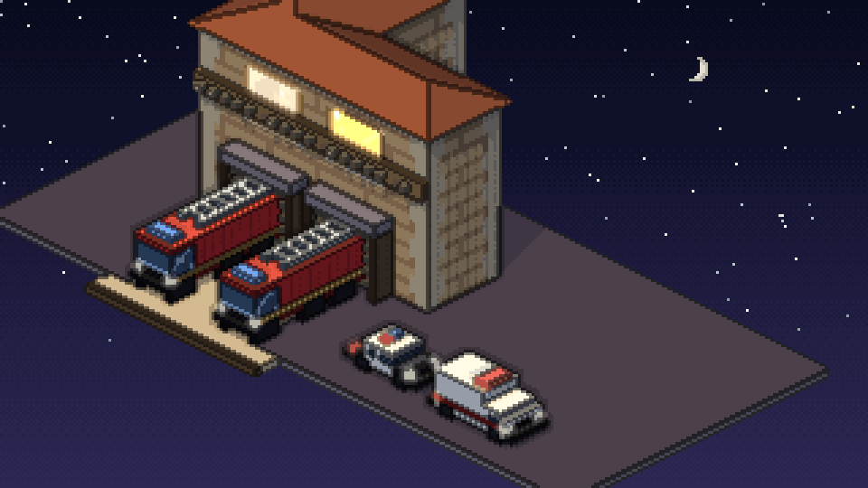

Tallboy is a 3D modeler that outputs pixel art. You build isometric buildings with boxes, extrude, loop cut and inset, paint the faces with your palette, and Tallboy draws the result at 1 texel = 1 pixel, with shading and an outline. It is free to play in your browser.
Isometric buildings, with rooms inside

Behind every window there is a room. Kitchens, offices, stairwells. The rooms move with parallax as the building turns, and they light up at night.
- Tools that work like Blender's: E to extrude, Ctrl+R to loop cut, G/R/S with axis locks.
- Paint on the faces with brush, bucket and line. Lospec palettes and ramps.
- Walls at 90 and 45 degrees. A px 1x view shows exactly what you will export.
- Room Studio: paint your own rooms and furniture. Dollhouse: cut the building floor by floor.
- Parts: awnings, balconies, signs, roof kits, stairs.
A building generator

Pick a building type, a facade style and a size, and get a finished building. This reel shows 16 generated types. There is also a template gallery, and every result is editable with the same tools as a hand-built one.
Streets and parks

Roads with markings and crosswalks, sidewalks, street lamps, trees, parked cars, and parks on the empty lots. Buildings line up along the street. The Demo opens on a small town, so you have something to look at on the first visit.
Real maps

Import a real place. The map starts as a flat plan, then the neighborhood rises into 3D buildings, streets and parcels. The example is a 300 x 300 m area of Madrid.
Map data © OpenStreetMap contributors, available under the ODbL.
Vehicles

73 vehicle archetypes across the street styles: modern, service, Victorian, rural, retro, industrial and more. Headlights, brake lights and sirens. Vehicle Studio lets you edit one and place it. Parked cars, bus depots, fire and police stations get their own vehicles.

A tram with rails and stops, car parks, and trees and plants that sway in the wind.
New in 1.18: export for your game
One Export panel (Alt+4). It lists every file before it writes anything.
- Baked sprites from 1, 4, 8 or 16 angles, with separate passes.
- 2D light maps: normal, height, emissive, AO and material, aligned with the sprite.
- Atlases for TexturePacker, Godot 4, Unity, GameMaker and Aseprite.
- Palette files: .gpl, .pal, .hex, .ase.
- Batch export and style variants, with an index JSON that rebuilds each building from its seed.
- Whole scene: one big image, PNG layers, a Tiled world, GLB, GIFs and a time-lapse.
- GLB and OBJ with the room boxes fitted.
Day and night
A 24 h cycle. The sun and moon cross the sky, streetlights come on, and the rooms light up as it gets dark. The street GIF above shows it. After rain, the sun comes out.
Demo vs Full
Demo (runs on this page)
- Plays in your browser, nothing to install.
- Modeling, painting, the generator, the interiors, the town and the day and night cycle.
- Save and load
.tallboyprojects. - Export PNG sprites from 1 or 4 angles.
- Vehicles in the modern, service and Victorian styles, and Vehicle Studio.
- Palette files, and the whole town as one image (with a watermark).
Full (Windows app)
- Everything in the Demo, offline.
- 8 and 16 angle bakes, night and shadow passes, light maps.
- Atlases and engine formats, batch export, style variants.
- Sprite sheets and
.asepritefiles, scene layers, Tiled, GLB and OBJ, time-lapse. - Sirens and all vehicle styles.
- An MCP server, so an AI assistant can drive Tallboy.
- Every update is included.
Requirements
- Demo: a recent Chrome, Edge, Firefox or Safari with WebGL2. Mouse and keyboard recommended.
- Full: Windows 10 or 11, 64-bit.
FAQ
Is the output real pixel art?
Yes. One texel is one pixel, no blur, no scaling. Your palette stays your palette.
Do I need to know Blender?
No. There is a first building tutorial in the app. If you know Blender, the shortcuts will feel familiar.
Does my Demo work carry over to Full?
Yes. Both open the same .tallboy files.
Mac or Linux?
The Demo runs in any browser with WebGL2. Desktop builds for Mac and Linux come later.
Try it now
Open the Demo on this page, load the town and press Alt+4. It takes a minute, and there is nothing to install. If you want to export to your engine, tell me which format you need next.
icemaan